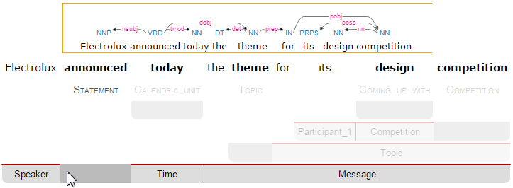
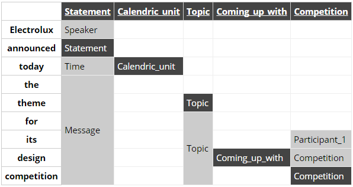
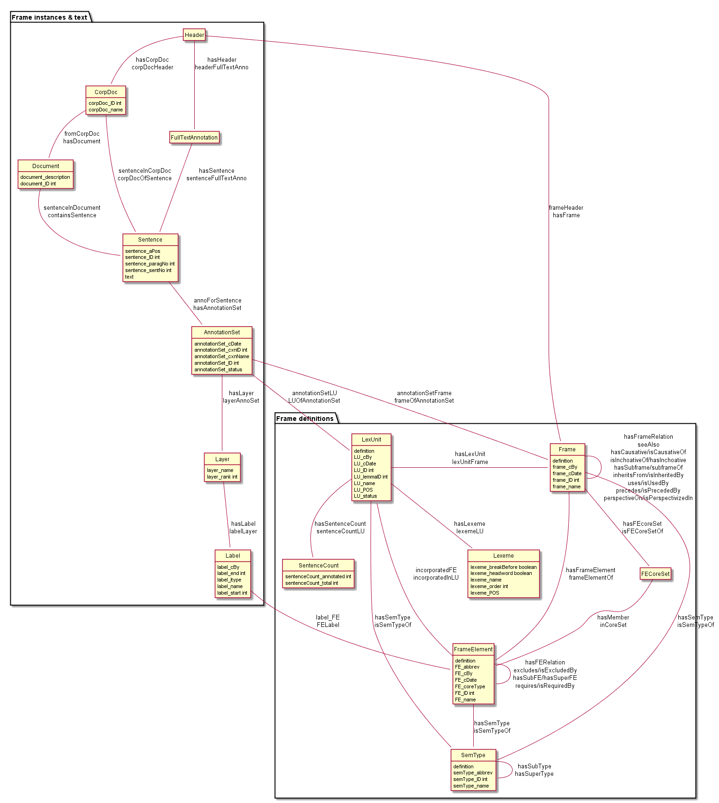
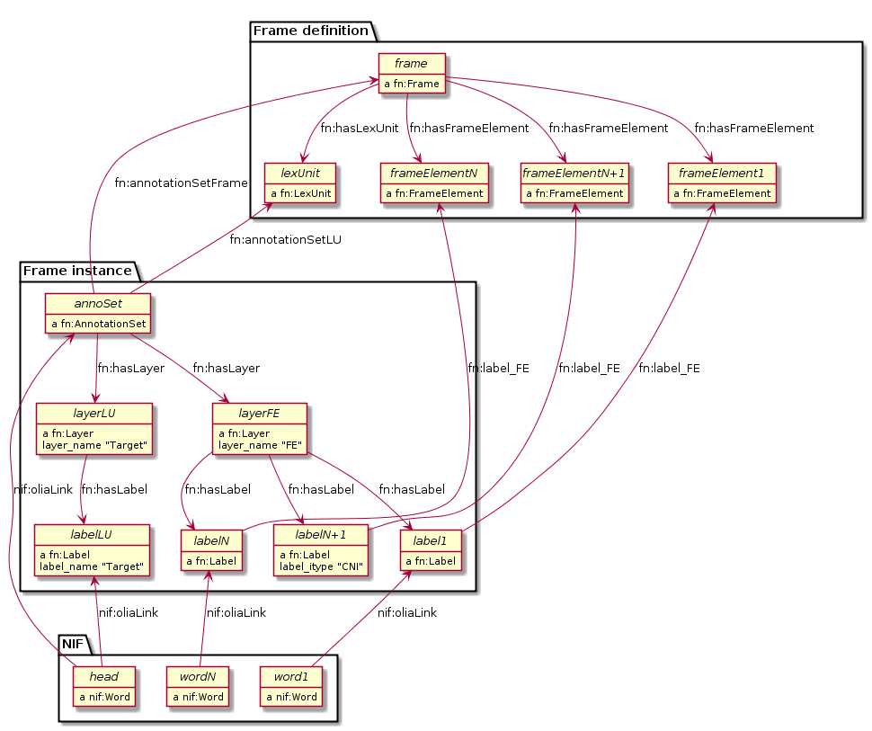
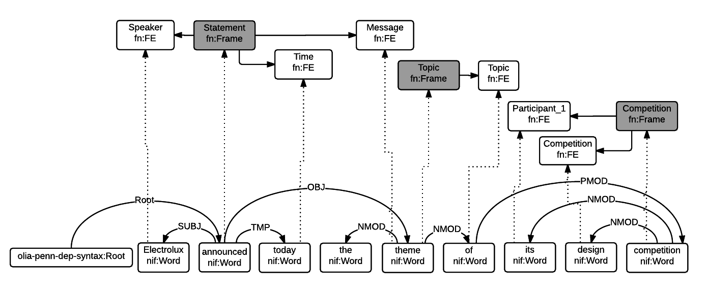

FN goes NIF: Integrating FrameNet in the NLP Interchange Format
1 Introduction
FrameNet (FN) [9] is a large-scale linguistic resource for English developed at ICSI UC Berkeley. It documents the syntactic and semantic combinations (valences) of predicative word senses in terms of frames, lexical units, frame elements, and relations between them. More precisely:
- Frames are conceptual situations along with their participants (e.g.
frame:Statementcorresponds to an event in which a statement is made) - Lexical Units (LU) are phrases or words that evoke frames (e.g.
lu:announce.vandlu:declare.vboth evokeframe:Statement) - Frame Elements (FE) are roles taken by participants in a frame: things, entities, times, places, etc (e.g.
fe:Speaker.statement,fe:Message.statement)
The FN lexical database also comprises a corpus of annotated sentences that exemplify all the above. FN has been converted to Linked Open Data (LOD) by ISTC-CNR [7], a conversion henceforth refered to as FN-LOD. This conversion covers not only FrameNet's lexical database but also FrameNet's corpus of sentences annotated with frames, FEs and other linguistic information.
The NLP Interchange Format (NIF) [3] is a set of ontologies, specifications and software to enable the exchange of linguistic annotations as RDF/OWL between Natural Language Processing (NLP) tools. The NIF model includes a core ontology to represent textual annotations and binding to text, and reuses NLP vocabularies, such as: ITS and NERD for Named Entity Recognition (NER) (individuals and classes respectively), OLIA for modeling model tagsets produced by various types of NLP tools, MARL for sentiment/opinion, etc.
In the last years NIF has gained wide-spread adoption in the Linguistic LD community, with a variety of linguistic corpora being published as NIF. For example, the Manually Annotated Sub-Corpus (MASC) [8] has been published as LOD NIF with additional links to linguistic resources in two recent efforts [5][10].
See [1] for a brief overview of Linguistic LD and related ontologies. An extensive bibliography is available on Zotero.
We are not aware of any alignment or example of using FN-LOD and NIF together. While [4] describes plans to interlink FN-LOD and MASC as LOD, neither it nor the two MASC LOD datasets cited above include FN-LOD.
This paper reviews the FN-LOD representation, compares it to NIF, and describes a simple way to integrate FN in NIF so that FrameNet-based annotations can be produced and consumed by NIF-compliant services. Crucially, this integration is achieved without resorting to any custom vocabulary (no new classes or properties). Instead, we align the core items of NIF and FN-LOD.
This FN-NIF integration is an important step towards bulding NIF-compliant pipelines of text analysis and Information Extraction (IE) components capable of producing LOD corpora with rich linguistic and semantic annotations. Such corpora is important for a wide range of tasks ranging from corpora analysis in linguistic research, to downstream applications like semantic indexing and summarization. The FN-NIF model presented here is used in the Multisensor project (MS) [6][11], which applies semantic technologies to the analysis of multimedia (including news articles and social media) and where NIF has been adopted as the data model for data exchange between text processing components. More precisely, the FN-NIF integration is used to encode the output of a relation extraction implementation that produces annotations of FrameNet-based n-ary relations. By using NIF to store the extracted relations as annotations, it is possible to integrate them with annotations produced by other text analysis services. Thus, for instance, relations in Multisensor can have as arguments entities annotated by NER and concept extraction modules.
The rest of this paper is structured as follows.
First, we introduce an example sentence which we will use through the paper to illustrate discussions.
Then we describe FN-LOD in detail and compare it to NIF. The FN-NIF model is presented, followed by sample queries to get information out of it.
Accompanying materials are available for download, including
Orgmode source (org) and local files
referenced in the paper as relative links ./*:
Turtle RDF (ttl), ontologies in Manchester Notation (omn),
bigger figures in PlantUML (puml) and png.
Through this paper we'll use the following sentence to illustrate discussions:
Electrolux announced today the theme for its design competition.
1.1 SEMAFOR
Some softwares are available for automatic FN annotation. We used SEMAFOR [2] to annotate the sample sentence.
SEMAFOR uses a dependency parse (shown on top of Fig \ref{SEMAFOR-horizontal})
to generate candidate frames for the sentence (shown at the bottom).
Here we have highlighted the Statement frame, invoked by lu:announce.v
and having FEs Speaker, Time and Message.
The other candidate frames are dimmed out.

Figure 1: SEMAFOR Output, Horizontal Layout
It may be easier to see the candidate frames in SEMAFOR's vertical layout (Fig \ref{SEMAFOR-vertical}). Here each column represents a frame.

Figure 2: SEMAFOR Output, Vertical Layout
1.2 SEMAFOR Candidate Frame Filtering
SEMAFOR offers a JSON format (./SEMAFOR.json) where one can see the candidate frames and their targets (LUs) and FEs.
It includes a score for each frame, which can help us pick the best frames:
| Frame | Score |
|---|---|
| Statement | 113.2 |
| Competition | 54.6 |
| Coming_up_with | 50.7 |
| Calendric_unit | 30.4 |
| Topic | 25.4 |
In this case the two top-scoring candidates (Statement and Competition) are the best frames.
Calendric_unit is too small (equal to lu:Time.statement), Coming_up_with is wrong, and Topic is part of Statement.
We propose a simple approach to filter candidate frames based on score and a dependency tree structure (see Fig \ref{FN-NIF-example}):
- Order candidate frames by decreasing score
- Repeat:
- Add the highest scoring frame f
- Discard any frames that are governed by f in the dependency tree
2 FN-LOD Ontologies
Major impediments to real world uses of FN-LOD include the complexity of the involved ontologies, the fact that there are two to choose from (see sec 2.2 and sec 2.3), the lack of an overall picture of how classes and properties fit together, and the lack of adequate documentation for some ontology elements.
The OWL ontology representation of FN-LOD is described in [7], but it is necessary to be familiar with the documentation of the FrameNet project [9] in order to understand the ontologies. While there is a partial ontology diagram in [7], it doesn't show all classes and relations. Some elements are commented extensively using texts from the FN Book [9], but we found these texts more understandable when reading them in the book, since the comments do not capture the context. Many elements are not documented, e.g. class fn:Header, data property fn:frame_cBy (xsd:string), etc. One can only surmise that fn:frame_cBy is the ID of the person who created the frame.
In order to understand the FN-LOD ontologies, we diagrammed classes and properties. Sample data (see sec 2.5) played a crucial role in building this understanding. Since the data is very large, we had to extract smaller connected fragments to be able to understand them. In this section we describe the available FN-LOD ontologies and RDF data files, provide diagrams to facilitate understanding, and derived files that are easier to consume.
2.1 Prefixes
2.2 fntbox ontology
The FN terminology box fntbox is the FN-LOD metamodel. It's an OWL ontology that uses Restrictions extensively, and is easiest to understand in Manchester notation (OMN): ./fntbox.omn. It has 16 Classes, 67 ObjectProperties, 49 DataProperties. Online documentation (OWLDoc) is available.
Most relations have inverses, but the PROV ontology designers have concluded that inverses actually harm interoperability by exerting a higher reasoning or querying cost:
When all inverses are defined for all properties, modelers may choose from two logically equivalent properties when making each assertion. Although the two options may be logically equivalent, developers consuming the assertions may need to exert extra effort to handle both (e.g., by either adding an OWL reasoner or writing code and queries to handle both cases). This extra effort can be reduced by preferring one inverse over another.
We agree with them and recommend to use exactly the FN-LOD properties shown in Fig \ref{fn-nif}, and not their inverses.
Inverses also hinder understanding the data hierarchy implied by the ontology. To aid understanding, we made a diagram (Fig \ref{fntbox}) (./fntbox.png, source ./fntbox.puml) showing all classes, their relations (object properties) and fields (data properties). For some properties we had to figure out the range from Restrictions; properties having a Union as domain are shown several times on the diagram.
{kind=link}

Figure 3: fntbox Ontology
To understand fntbox consider the classes in two groups and navigate top-down.
First are classes that represent texts and their annotation with frame instances and other linguistic info:
Headerholds together allFullTextAnnotationandCorpDocabout the same frame.FullTextAnnotationrepresents a mode of annotation where sentences are "preselected" by a given text.CorpDocis a corpus comprising of documents and sentences that are carefully chosen by lexicographers to illustrate the possible valences of LUs, i.e. make various frames for each sense of each LU.Sentenceholds thetextbeing annotated and some identifying information.AnnotationSetis a set of annotations about one frame. One sentence may have several frames and they may even overlap.Layeris a subset of annotations with a single purpose, indicated infn:layer_name. Often used ones:- Target: LU that is target of the frame. Such layer has a single label.
- FE: frame elements
- PENN: part of speech (e.g. VBD, VVN, dt, nn)
- PT: phrase type (e.g. NP, AJP, PP, PPing)
- GF: grammatical function (e.g. Ext, Obj, Dep, Comp)
- NER: named entity recognition (e.g. person, location)
Labelis a word or phrase in an annotatedSentence(indicated by indexlabel_start, label_end) that:- Plays the role of LU instance. This is indicated by
fn:label_namebeing "Target", and it's the singleLabelin a layer having the samefn:layer_name - Or plays the role of FE instance. In this case
fn:label_FEpoints to the FE definition (e.g.fe:Speaker.statement) andfn:label_namecorresponds (e.g. "Speaker"), - Or carries a grammatical or POS tag in
label_name, - Or indicates a lexically omitted FE (see [9] sec 3.2.3 Null instantiation) using
fn:label_itype(e.g. "CNI", "DNI", etc), in which caselabel_start, label_endare omitted.
- Plays the role of LU instance. This is indicated by
Then are frame definition classes:
Frameis a structure that abstracts over real-world situations, obtained through linguistic attestationLexUnitis the head-word of a sentence or sub-sentence that invokes the frame. An important goal of the FN project is to capture the meaning of words through annotated examples, that's why the LU can point to anAnnotationSetthat supports it. It can also carry simple statistics (SentenceCount) used for managing the work of annotators.Lexemeis the linguistic representation of a LU. One LU can have several lexemes.FrameElementare entities (things, actors, times, messages, etc) that participate in a frame. They are classified withFE_coreTypeinto Core, Core-Unexpressed, Extra-Thematic, Peripheral.FECoreSetdescribes a set of alternative FEs, one of which must be present in the frame. A frame can have several core sets.SemTypeclassifies frames, FEs and LUs by type. E.g. some sem types are:- for Frame:
Non-perspectivalized_frame,Non-Lexical_Frame - for FE:
Sentient(an agent),Artifact,Message,State_of_affairs
- for Frame:
2.3 framenet ontology
The framenet ontology is an alternative version of fntbox. It is significantly more complex: 33 Classes, 71 ObjectProperties, 23 DataProperties, and 18 Individuals. We converted it to Manchester notation (./framenet.omn) and made two diagrams:
- ./img/framenet.png (source ./framenet.puml). This is nearly unreadable, showing the complexity of this ontology
- ./img/framenet-nolabel.png (source ./framenet-nolabel.puml), which elides edge labels to avoid clutter, but is still too complex to show here.
{kind=link}
{kind=link}
This ontology perhaps corresponds better to what is described in the FN Book [9], but since it is not used in the RDF files described below, we do not give it further consideration.
2.4 fnabox ontology
The FN-LOD assertion box ontology fnabox is an RDF representation of all frame definitions.
It includes only individuals, not classes nor property definitions.
It used some illegal URI chars (spaces and parentheses) that we converted to underscores (e.g. transformed lu:swing_(into).v to lu:swing__into_.v).
Then we converted it to ./fnabox.ttl, which is more readable: all individuals are sorted by name and all statements about an individual are together.
For instance, the triples for frame:Statement include:
frame:Statement fn:hasFrameElement fe:Time.statement, fe:Iteration.statement... ; fn:hasLexUnit lu:gloat.v, lu:explain.v, lu:declaration.n, lu:talk.v... ; fn:isInheritedBy frame:Telling, frame:Reveal_secret, frame:Recording... ; fn:isUsedBy frame:Unattributed_information, frame:Adducing... ; fn:uses frame:Communication .
And these are the triples for a couple of the core FEs in that frame:
fe:Speaker.statement a fn:FrameElement ; fn:hasSemType st:Sentient ; fn:hasSuperFE fe:Speaker.speak_on_topic... fe:Message.statement a fn:FrameElement ; fn:hasSemType st:Message ; fn:hasSuperFE fe:Message.encoding, fe:Message.communication...
2.5 fndata
fndata_v5 is a corpus of FrameNet annotations provided in RDF by ISTC-CNR, consisting of 540Mb of RDF/XML (292Mb Turtle, 1.03Gb NTriples) and comprising 3.8M triples. It includes 5946 sentences and 20361 frame instances (annotationSetFrame), i.e. 3.4 frames per sentence. The info about each sentence takes 640 triples on average; about a quarter of these are pure frame instance info (45 triples per frame).
We extracted all triples about iran_missile_fullTextAnnotation_sentence_52 into ./iran_missile_sentence_52.ttl. This, for instance, is sentence 3 of paragraph 10 of a fullTextAnnotation corpus named "iran_missile":
This project was focused on the development of a longer ranged (150-200 km) and more heavily armed version of the Israeli Gabriel anti-ship missile (not as sometimes reported with the development of a ballistic missile based upon Israeli Jericho surface-to-surface missile technology) .
Extracting the triples was fairly trivial since the URLs of nodes in these triples share the same base. The resulting set of triples for the above sentence played a crucial role in allowing us to understand the structure of FN-LOD data and the meaning of most fields (see Fig \ref{fntbox} and field descriptions above). It includes 6 manually annotated frames: Gizmo, Bearing_arms, Cause_to_make_progress (twice), Project and Type. SEMAFOR reports these frames and a number of smaller frames (often consisting of a single word): Artifact, Cardinal_numbers, Degree, Duration_attribute, Frequency, Increment, Part_inner_outer, Place_weight_on, Range, Statement, Vehicle and Weapon. While Gizmo is invoked by this phrase: "surface-to-surface missile technology", it is not recognized by SEMAFOR, as it may have an older set of frame definitions.
3 Comparing FN-LOD to NIF
Since our goal is to integrate FN-LOD to NIF, we'll start with a comparison between the two. Compare fntbox (Fig \ref{fntbox}) to the NIF class and property diagram (Fig \ref{NIF-schema}).
{kind=link}

Figure 4: NIF Core Ontology
3.1 Text Framing
The document is the basic level at which there is correspondence between FN-LOD and NIF: fn:Document and nif:Context.
The text is stored in fn:text, respectively nif:isString.
At the level above document, FN-LOD has fn:CorpDoc or fn:FullTextAnnotation (two kinds of corpora).
NIF uses nif:Context for this, using nif:broaderContext to point to higher-level contexts (but we are not aware of NIF data actually using this pattern).
Below document, fn:Sentence is the basic FN-LOD level to which frames are attached. Then follow fn:AnnotationSet, fn:Layer, fn:Label.
Char offsets are attached to fn:Label: fn:label_start, fn:label_end.
NIF uses a generic class nif:Structure with subclasses Paragraph, Sentence, Phrase, Word, etc.
Char offsets are specified at each level (nif:beginIndex, nif:endIndex).
One can also provide the text at this level (nif:anchorOf),
though this is redundant because referenceContext/isString is mandatory and contains the full text.
3.2 Text Links
Every NIF string (Paragraph, Sentence, Phrase, Word etc) must point to the enclosing context (nif:referenceContext).
NIF has property nif:subString (and inverse nif:superString) that can be used to point uniformly from higher level texts to lower level texts
(e.g. from Paragraph to Sentence to Phrase to Word). However it is not often used.
There is also a specialized property nif:word (inverse nif:sentence) that points from a sentence down to its words; but it is not declared as specialization of nif:subString.
One can also make chains of sentences (nif:previousSentence, nif:nextSentence) and words (nif:previousWord, nif:nextWord), and point to the first/last word of a sentence.
In contrast, FN-LOD has non-uniform treatment of links: to navigate from Sentence to its strings (Label),
one has to follow the property path sentenceInDocument/annoForSentence/ hasLayer/hasLabel.
3.3 Text Nodes
FN-LOD doesn't recommend any convention for the URLs of text nodes, but you can see a pattern in sec 2.5.
E.g. iran_missile_fullTextAnnotation_sent- ence_52_annotationSet_6_layer_2_label_0 is the URL of label 0 in layer 2 in set 6 of sentence_52
(which is actually sentence 3 of paragraph 10 of the fullTextAnnotation corpus.
Note: labels, layers and sets use only even numbers in this representation).
This label represents the phrase surface-to-surface missile (from offset 282 to 253) representing fe:Use.gizmo of frame:Gizmo.
This convention makes labels relative to annotation sets (frame instances), and indeed this is borne out by the fntbox class diagram (sec 2.2).
In contrast, NIF strongly recommends adopting a URL scheme that is based on character offsets and is thus global within the document (nif:Context).
The class nif:RFC5147String provides such a scheme. The above phrase would be addressed like this (<#char=0,2353> represents the complete text).
<#char=282,253> a nif:Phrase; nif:referenceContext <#char=0,2353>.
The reason is to ensure interoperability between different NLP tools that all output NIF format over the same text. Using a uniform node addressing scheme ensures that the triples produced by the different tools will "mesh" together.
This is perhaps the most significant difference between FN-LOD and NIF:
- FN-LOD defines Labels "as needed" by linguistic annotation, and locally. Several Label nodes can point to the same piece of text (offsets in the document). Labels are not shared between different annotations (NLP features).
- NIF typically defines Strings for every word and sentence of the document, globally. Each piece of text is represented by one node (but of course, Words overlap their containing Phrases and Phrases overlap their containing Sentences).
Several NLP features can be attached to this node:
nif:oliaLinkfor syntactic individualnif:oliaCategoryfor syntactic classits:taIdentReffor Named Entity individualits:taClassReffor Named Entity class; etc
4 Integrating FN-LOD in NIF
As we have seen in the previous section, the FN-LOD and NIF models for representing annotated text are totally different.
Therefore we propose to represent the minimum possible FN nodes, and point to them from nif:String using nif:oliaLink.
We propose a representation that integrates FN-LOD in NIF (Fig \ref{fn-nif}), relying on a dependency parse of the sentence. Let head be a head-word that governs word1..N (and by extension, the phrases governed by these words). Assume head corresponds to lexUnit that invokes frame, and the frame has elements frameElement1..N, corresponding to word1..N. Just for illustration, assume the frame also has a lexically omitted FE frameElementN+1 of type CNI (constructional null instantiation).

Figure 5: FrameNet Integration in NIF
The easiest way to understand the representation is to think of fn:AnnotationSet as frame instance and think of fn:Label as FE instance.
The representation consists of 3 parts:
- NIF includes word offset info, as well as the dependency tree from head to word1..N (not shown).
nif:dependencyor specific dependency parsing properties are used for that tree. E.g. MS usesupf-deep:deepDependency - Frame instance connects
nif:Wordsto frames. - Frame definition is defined in the fnabox ontology (sec 2.4)
We don't use fe:label_start and fe:label_end because those would duplicate nif:beginIndex and nif:endIndex unnecessarily.
The same word could participate in several frames (as LU or FE), in which case it will have multiple nif:oliaLink.
The lexically omitted FE labelN+1 (of type CNI) has no corresponding NIF node. Nevertheless, it is a full participant in the frame.
The nodes labelLU and layerLU are redundant and carry no information (except the fixed string "Target"). There’s a direct link nif:oliaLink from head to annoSet, which itself points to frame and lexUnit, so there's little reason to use the indirect path fn:hasLayer/fn:hasLabel. In fact the indirect path can be considered harmful, since it causes head to have two nif:oliaLink, which could cause confusion if head participates in several frames. We have included these redundant nodes in Fig \ref{fn-nif} to be faithful to the fntbox ontology 2.2. But they can safely be omitted, which we have done in sec 4.2.
The links of label1..N+1 (fn:hasLabel and fn:label_FE) are not redundant.
The former ties the frame instance together, while the latter points the specific FE in the frame definition.
4.1 Querying FN-NIF
FN-LOD in NIF involves a fairly complex graph structure.
In this section we show a few queries to extract data from that graph. We use SPARQL property paths liberally (including inverses ^) and indicate the input parameter of a query with $. We don't bother to check the types of intermediate nodes, relying that the specific FN properties will occur only on appropriate nodes.
Find the Frame and LU corresponding to a head-word (if indeed it is the head-word of a frame-annotated phrase):
select * { $head nif:oliaLink ?annoSet. ?annoSet fn:annotationSetLU ?lu; fn:annotationSetFrame ?frame}
We could also use the round-about path
select * { $head nif:oliaLink [ fn:label_name "Target"; ^fn:hasLabel/^fn:hasLayer ?annoSet. ?annoSet fn:annotationSetLU ?lu; fn:annotationSetFrame ?frame]}
After getting the Frame and LU, we'd want to get all FE and the corresponding word1..N:
select ?fe ?word ?itype { # Find the ?annoSet and ?frame $head nif:oliaLink ?annoSet. ?annoSet fn:annotationSetFrame ?frame. # Get all ?fe, ?label, (optionally) ?word ?frame fn:hasFrameElement ?fe. ?annoSet fn:hasLayer/fn:hasLabel ?label. ?label fn:label_FE ?fe. optional {?word nif:oliaLink ?label} optional {?label fn:label_itype ?itype}}
Each row of the result-set will have a ?fe of the frame,
and either ?itype (for lexically omitted FEs) or the corresponding NIF ?word.
We don't return ?label because it's used only for connectivity but doesn't carry useful info.
Find all frames of a sentence together with the corresponding fn:AnnotationSet.
Usually nif:word is used to point out the words of a sentence (that is also the practice in MS):
select * { $sentence nif:word/nif:oliaLink ?annoSet. ?annoSet fn:annotationSetFrame ?frame}
Find all frames of the complete text (nif:Context) together with the corresponding fn:AnnotationSet.
NIF mandates that nif:referenceContext is used to connect each word to the complete text:
select * { $context ^nif:referenceContext/ nif:oliaLink ?annoSet. ?annoSet fn:annotationSetFrame ?frame}
4.2 Representing the Sample Sentence in FN-NIF
Fig \ref{FN-NIF-example} represents the sample sentence as NIF, adding FN-LOD annotations.
We represent 3 of the 5 candidate frames (Statement, Topic, Competition);
the filtering described in sec 1.2 would leave only the top frame Statement

Figure 6: FN-NIF Example
- The top layer shows Frame definitions (fntbox)
- The bottom layer shows NIF words and dependency links between them
- The dotted arrows represent frame instances, connecting words to frames.
For simplicity, we don't show the
Label,Layer,AnnotationSetnodes (see sec 4)
./fn-nif-example.ttl represents all SEMAFOR candidate frames. Compared to sec *Integrating FN in NIF, we elide the redundant nodes labelLU and layerLU.
5 Conclusions
We presented an integration of FN-LOD into NIF that allows us to emit various linguistic info about text corpora in NIF in an integrated way: frames (FN), POS tagging (e.g. Penn), morphological, syntactic and dependency parsing (OLIA), named entities (ITS), etc. This integrated representation is used by the MS project.
5.1 Future Work
5.1.1 Represent Confidence
Sec 1.2 remarked that SEMAFOR emits a confidence score for each candidate frame.
It would be useful to emit this score, allowing clients to select the most probable frames.
- NIF has a property
nif:oliaConf(confidence ofnif:oliaLinkandnif:oliaCategory). But we cannot use it, since the same word may participate in several frames and thus have severalnif:oliaLink. - We could use the NIF Stanbol profile to associate several annotations with the same String and emit confidence for each one.
But compared to NIF Simple, it uses completely different properties, e.g.
fise:entity-referencevsits:taIdentRefandfise:entity-typevsits:taClassRef. And there are stability problems: NIF Stanbol shows different classes and properties compared to [3] fig.3 and Stanbol EntityAnnotation Structure, e.g.
| NIF Stanbol | NIF and Stanbol |
|---|---|
| nif:EntityAnnotation | fise:EntityAnnotation |
| nifs:extractedFrom | fise:extracted-from |
| nif:oliaConf | fise:confidence |
- Recently a new proposal Provenance and Confidence for NIF annotations was made, motivated by the FREME project.
It is part of a developing NIF 2.1 specification currently at Release Candidate stage (NIF 2.1 RC), see source.
It offers two options: Using only Generic Provenance and Confidence Properties, or Using Companion Properties (see last 2 columns below).
But it is still in flux, e.g. on 14 Mar 2016 a number of properties were split to a separate namespace
nif-ann:
5.1.2 Create an RDF Shape Description
Our representation doesn't define any new properties: it only combines FN-LOD and NIF properties in an appropriate way. From this point of view, it is not an ontology but an application profile, data pattern or RDF Shape. Recently the W3C RDF Shapes working group has made great advances in analyzing requirements for defining data shapes and formalizing languages to describe them.
It would be useful to define the FN-NIF integration (Fig \ref{FN-NIF-example}) as an RDF Shape. We could use the brief ShEx language or the more formal SHACL language. However, they are still under development.
5.2 Acknowledgements
This work is part of the MultiSensor project that has received funding from the European Union under grant agreement FP7 610411. The 4 anonymous referees made useful suggestions for improving the article. Object diagrams are made with PlantUML.
6 References
- Alexiev V. Linguistic Linked Data presentation, Multisensor Project Meeting, Bonn, Germany, October 2014.
- ARK Syntactic & Semantic Parsing. Noah’s ARK research group, Carnegie Mellon University.
- Hellmann S., Lehmann J., Auer S., and Brümmer M. Integrating NLP using Linked Data. In International Semantic Web Conference (ISWC) 2013.
- Ide N., FrameNet and Linked Data. In Frame Semantics in NLP: A Workshop in Honor of Chuck Fillmore (1929–2014), pages 18–21. Baltimore, Maryland USA, 27 June 2014.
- Moro A., Navigli, R., Tucci, F.M., and Passonneau. R.J. Annotating the MASC Corpus with BabelNet. In Language Resources and Evaluation (LREC 2014), Reykjavik, Iceland, May 26-31, 2014. Download page, checked 17 Mar 2016.
- MultiSensor project. CERTH, DW, Eurecat, Everis, Linguatec, Ontotext, Pressrelations, UPF. Nov 2013 - Oct 2016.
- Nuzzolese A.G., Gangemi A., and Presutti V. Gathering lexical linked data and knowledge patterns from FrameNet. In Knowledge Capture (K-CAP'11), pages 41–48. June 26-29, 2011, Banff, Alberta, Canada
- Passonneau R., Baker C., Fellbaum C., and Ide N. The MASC Word Sense Sentence Corpus. In Language Resources and Evaluation Conference (LREC-12), Istanbul, Turkey. Download page, checked Jan 2016 (offline on 17 Mar 2016).
- Ruppenhofer J., Ellsworth M., Petruck M.R.L, Johnson C.R., Scheffczyk J. FrameNet II: Extended Theory and Practice, Sep 2010
- Siemoneit, B., McCrae, J. P., and Cimiano, P. Linking four heterogeneous language resources as linked data. Workshop on Linked Data in Linguistics: Resources and Applications (LDL-2015). (2015). Beijing, China, 31 July, 2015. Download page, checked 17 Mar 2016.
- Vrochidis, S. et al. MULTISENSOR: Development of multimedia content integration technologies for journalism, media monitoring and international exporting decision support. IEEE International Conference on Multimedia & Expo Workshops (ICME15). Turin, Italy, 2015. 10.1109/ICMEW.2015.7169818